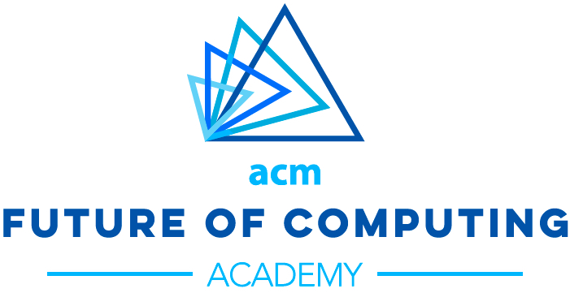

Workshop held in conjunction with ECSCW 2019 on June 8th in Salzburg, Austria
Co-sponsored by ACM FCA
The goal of this one-day workshop is to explore the concept of care networks in CSCW and to devise a plan for future research on healthcare technologies and systems. We will discuss collaborative care situations that are better understood by exploring various aspects of care networks. Our approach will be based on co-creation, bringing diverse perspectives together to speak about the various potentials as well as consequences of technologies that support care networks.
The background for this workshop is the reduced discussion on collaborative care arrangements. Even though dealing with a chronic condition often involves daunting tasks and the participation of a collective in care, previous work has mostly examined collaborations as the work of dyads, such as patients and clinicians. In this workshop, we will explore the concept of care networks, which can better account for the numerous human and non-human actors and roles that compose care. We invite designers, researchers, and practitioners to participate in a full-day workshop in which we will reflect on empirical studies and theoretical accounts of care networks, and put forward an agenda for better acknowledging care networks in the research around healthcare technologies and systems.
See the complete workshop proposal.
Prospective participants are invited to submit a 2-4 pages position paper using the EUSSET template (available as Latex, MS Word, or RTF). Accepted contributions will be published as part of a technical report from one of the organizers’ institutions or at Zenodo. Submissions should be sent to: ecscw2019.carenetworksworkshop@gmail.com by April 15th 2019.
We expect position papers that describe or discuss collaborative care situations that are better understood in terms of care networks, including: case studies or reports on recent experiments or prototypes, ethnographic fieldwork or qualitative studies, theoretical accounts, and critical reflections. Authors can make contributions that discuss issues relevant to the design, development, or use of technologies for care, or impacts of technology use on care. Possible topics include, but are not limited to:
April 8th April 15th 2019.: Submission deadline
May 2nd 2019: Notification of acceptance
May 10th 2019: Camera-ready version
June 8th 2019: Workshop at ECSCW 2019
Sun Young Park, University of Michigan
Francisco Nunes, Fraunhofer Portugal AICOS
Andrew Berry, Kaiser Permanente Washington Health Research Institute
Ayşe Büyüktür, University of Michigan
Luigi De Russis, Politecnico di Torino
Mary Czerwinski, Microsoft Research
Woosuk Seo, University of Michigan
This workshop is co-sponsored by the ACM Future of Computing Academy (FCA), Co-creation working group. The FCA supports the participation costs of care professionals, including doctors, nurses, social workers, etc.
